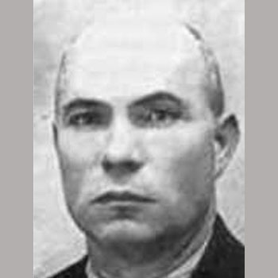

Isusovački blaženici
Brat laik · Mučenik
Bl. Pedro Gelabert Amer
1887.–1936.
Brat Pedro Gelabert Amer većinu je redovničkoga života proveo na Mallorci. Služeći novicijatu u Gandíji, uhićen je i pogubljen tijekom građanskoga rata.
Tekst je preveden i prilagođen uz pomoć umjetne inteligencije.

Izvor slike
- Spomendan
- 23. kolovoza
- Zaštitništvo
- Nije navedeno u izvoru
- Životni vijek
- 1887.–1936.
- Djelovanje
- Svakodnevni rad i skrovita služba · Progoni i progonstvo · Mučeništvo
- Razdoblje
- 19., 20. stoljeće
- Datum smrti
- 23. kolovoza 1936.
U kalendaru zbirke koristi se dan smrti. Taj datum nije zasebna potvrda liturgijskoga spomendana.
Životopis
Pedro Gelabert Amer rođen je 1887. u Manacoru na Mallorci. U Družbu Isusovu stupio je 1907., a posljednje zavjete položio 1917. Veći dio redovničkoga života proveo je na rodnom otoku. Kao brat bio je vješt u praktičnim poslovima koje je zajednica trebala.
Godine 1930. premješten je u Gandíju radi službe u novicijatu. Nakon raspuštanja Družbe u Španjolskoj 1932. redovničke su se kuće morale zatvoriti. Gelabert je ostao uz ostarjeloga poglavara Tomu Sitjara i pomagao mu u svakodnevici. Kada je 1936. počeo progon, njihova je mala zajednica živjela izvan nekadašnjega sigurnog redovničkog ustroja.
Uhićen je i zatočen sa Sitjarom, Carbonellom i Grimaltosom. Službeni dekret o mučeništvu čuva osobitu pojedinost: ponuđeno mu je oslobođenje, ali ga je odbio kako ne bi napustio oca Carbonella. Taj podatak pripada njegovu osobnom životopisu, a ne samo općoj povijesti skupine.
Pogubljen je 23. kolovoza 1936., nekoliko dana nakon Sitjara, s Carbonellom i bratom Grimaltosom. Njegov put od otočke redovničke službe do vjernosti zatočenoj subraći svjedoči o bratstvu koje je nadživjelo ukidanje zajedničke kuće. Blaženim je proglašen 11. ožujka 2001.
Tekst je preveden i prilagođen uz pomoć umjetne inteligencije.
Pročitaj više na izvornoj stranici ↗